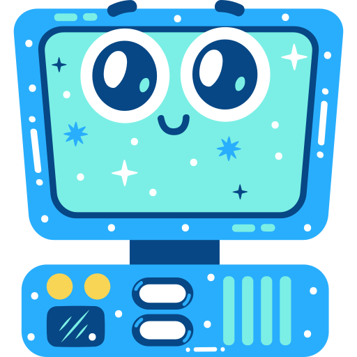
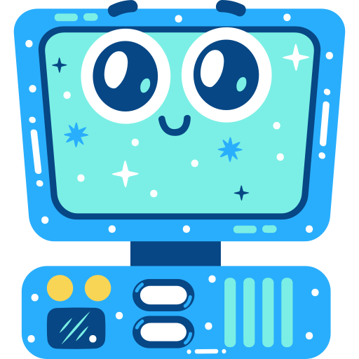
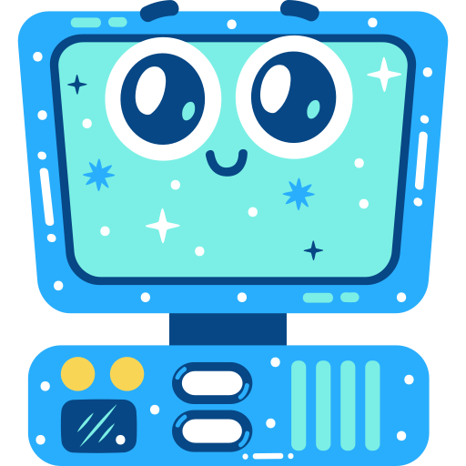
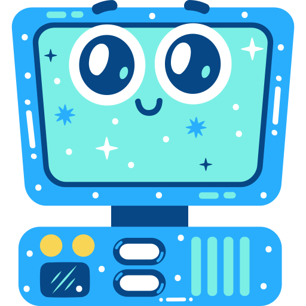

I'm Mateusz
a web designer
 




I'm Mateusz, currently I'm an educator in a children's center, but I'm looking forward to start my new adventure in the world of technology companies. I am learning on my own everything I can related to programming, but I am not a complete novice when it comes to computers. I imagine that like many, I have already had contact with computers since the telephone connection was used, and I have assembled my computers by myself, so the basic maintenance things like assembling computers and the accompanying software could be said to be my beginnings in the world of technology.

In my spare time I like to play the guitar and the piano. It gives me great joy. I meet with friends to play together, we arrange and record songs.

I've been playing basketball since I was a kid. Currently, I am the captain of an amateur team, with which we have won several championships. In addition to playing, I also enjoy watching games.
I would love to know your opinion on the design or functionality of this site.